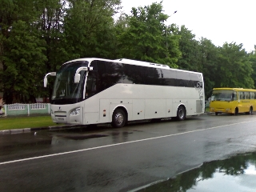
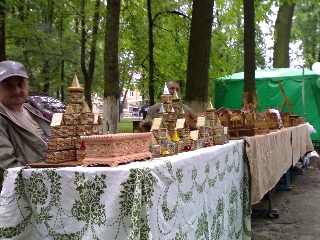
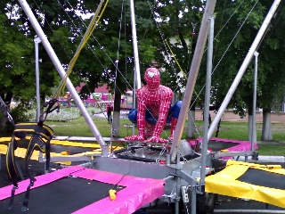
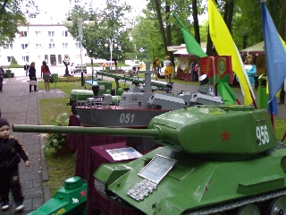
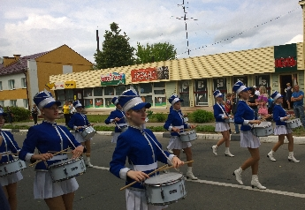

XIV
Международный фестиваль детского творчества
«Золотая пчёлка».

XIV Международный фестиваль детского творчества
«Золотая пчёлка» в г. Климовичи
проходит в восемнадцатый раз.
Нынешний фестиваль проходит под девизом Года гостеприимства и
празднования 70-летия освобождения Республики Беларусь от
немецко-фашистских захватчиков. Программа насыщена самыми различными
музыкальными, культурными мероприятиями и конкурсными проектами. Формат
музыкального праздника определен четырьмя основными тематическими
днями: «Дзень беларускай гасціннасці»,
«Дзень сяброўства», «Дзень замежных
культур» и «Дзень дзяцінства».
Председателем жюри в жанре «Вокальное искусство»
являлся Михаил Дриневский, народный артист Беларуси, профессор кафедры
хорового дирижирования Белорусской академии музыки, художественный
руководитель Национального академического народного хора Республики
Беларусь имени Г.И.Цитовича;
в жанре «Хореографическое искусство»
номера оценивались под председательством Валентина Дудкевича,
народного артиста
Беларуси, профессора, художественного руководителя ансамбля танца
Беларуси;
в жанре «Изобразительное искусство»,
«Декоративно-прикладное искусство» —
Григория Шауро, доктора искусствоведения, профессора, заведующего
кафедрой народного декоративно-прикладного искусства Белорусского
университета культуры и искусств, члена Белорусского союза художников.
В этом году в конкурсную
программу фестиваля заявлено около 700
участников 11 стран. Впервые участие в Международном фестивале детского
творчества
«Золотая пчёлка» принимают гости из Узбекистана и
Туркменистана.
Первыми в наш город приехали представители Кыргызстана, Финляндии,
Узбекистана и Российской Федерации. Их гостеприимно приняли в
государственном аграрном колледже и государственном профессиональном
лицее № 14.
Также прибыли делегации из Украины, Китая, Казахстана, Латвии, и
Молдовы.
На площади возле районного центра культуры прошла официальная
церемония встречи гостей. Девушки в национальных костюмах, с
хлебом-солью приветствовали творческие коллективы из стран дальнего и
ближнего зарубежья.
Четверг, 29 мая, был
заявлен организаторами фестиваля как
«Дзень беларускай гасціннасці». В центре работала
театрализованная
фольклорная выставочно-торговая экспозиция творческих коллективов,
мастеров декоративно–прикладного искусства, учащихся детской
школы
искусств, дома ремесел.
Для гостей мероприятия в центре города, в районе площади 50-летия
Великого Октября,
развернулась масштабная выставка-продажа белорусских предприятий,
производящих товары и продукты питания для детей, центром которой стала
деревня «Домочай».
ОАО
«Булочно–кондитерская компания
«Домочай» (Могилёв) предлагает широкий ассортимент
сладостей. Традиционно работает театрализованная фольклорная
выставочно–торговая экспозиция «Клімавіцкая
гасцёўня»,
организована дегустация блюд белорусской национальной кухни, продажа
сувенирной продукции, работа игровых аттракционов.
Все желающие могли приобрести сувениры, посетить игровые аттракционы,
попробовать блюда национальной кухни. Вечером гостей праздника ждали
обширные концертная и конкурсно–танцевальные программы.
В пятницу вечером состоялось праздничное открытие
XIV
Международного детского творчества
«Золотая пчёлка». Флаги 11 стран-участниц:
Беларуси, России, Украины, Казахстана,
Узбекистана, Туркменистана, Кыргызстана, Латвии, Молдовы, Китая и
Финляндии развивались на главной площади фестиваля.
В честь 70-ти летия освобождения Беларуси от немецко-фашистских
захватчиков представители творческих делегаций
возложили цветы к братской могиле в городском парке.
После чего конкурсанты дарили зрителям свои яркие выступления до самого
позднего вечера. Завершился второй фестивальный день праздничным
фейерверком.

В субботу с самого утра начала работать выставка
собак
«Дог–шоу».
Немалое количество зрителей
собрал конкурс «Мисс «Золотая пчёлка».
Каждая участница конкурса получила подарок, предоставленный Белорусским
фондом мира.
Все желающие могли попробовать свои силы в конкурсах
«Рисунок на асфальте» и «Рисунок на
мольберте».
Победителями в первом конкурсе стали:
Анастасия Гавлинская (Климовичи),
Ангелина Черепанова (Кричев),
Дарья Бочкова (Кричев), Александра Шашкова (Климовичи).
Самыми удачными рисунками на мольберте признаны работы Анастасии
Напреенко (Климовичи),
Маргариты Фроловой (Кричев), Ольги Лещина (Климовичи), Евы Далецкой
(Кричев).
Воспитанники Климовичской и Кричевской детских школ искусств награждены
дипломами 1-й степени.
Порадовал зрителей и праздничный концерт «Фестывальная
вандроўка», во время которого страны–участницы
представили свои творческие презентации.
Незабываемые впячетления оставили выступления военнослужащих и оркестра
вооружённых Сил
Республики Беларусь.
Завершением субботних праздничных мероприятий стала творческая
программа «Подарок от МТС».
Финалом музыкального праздника стало праздничное
шествие
«Квітней, дзяцінства, на планеце!», церемония
награждения лауреатов фестиваля и заключительный гала-концерт
«Мы - Міра дзеці» во время которого были вручены
дипломы лауреатам фестиваля.

Дипломами 1-й степени награждены:
- в номинации «Солисты
— народное
пение» — Вероника Мартыненко (Калининград),
Виктория Кожемякина (Могилёв), Аделина Ковальчик
(Санкт–Петербург);
- в номинации «Вокальные ансамбли
— народное пение» — образцовый ансамбль
народной песни «Жавароначкi» (Столбцы, Минская
область);
- в номинации «Солисты — эстрадное
пение» — Анастасия Посредникова
(Санкт–Петербург), Валерия Азаренко (Могилёв), Владлен Иванов
(Минск);
- в номинации «Вокальные ансамбли
— эстрадное пение» — образцовый вокальный
ансамбль «Песенка» (Минск);
- в номинации «Эстрадный танец»
— хореографический ансамбль «Сюрприз»
(Тутаев, Ярославская область),
детская шоу–группа «Alexis kids» (Мозырь);
- в номинации «Народно–сценический
танец» — хореографическая студия
«Изюминка» (Кировск),
образцовый художественный казачий ансамбль «Весёлый
экипаж» (Стародуб, Брянская область)
Самой высокой оценки жюри и Гран–при
удостоены:
- солистка образцовой эстрадной студии
«Вдохновение» ГУО «Могилёвская гимназия
№1» Валерия Шепелевич,
солистка эстрадной студии УО «Могилёвская государственная
гимназия–колледж искусств» Анна Трубецкая,
ансамбль современной хореографии «Вдохновение» УО
«Национальный центр художественного творчества детей и
молодёжи» Министерства образования Республики Беларусь.
Участники XIV Международный фестиваль детского
творчества
«Золотая пчёлка» из г. Климовичи Алина Кошелева,
Арина Конончук и Снежана Говоритова
в номинации «Солисты — эстрадное пение»
были награждены дипломами 3–й степени.
Яне Прокофьевой (Климовичи) и Елизавете Тапчевской (Чериков) вручены
Специальные дипломы и призы Могилёвского областного отделения
«Белорусский Фонд мира»

Специальными дипломами и призами Республиканского
общественного обьединения «Белорусский детский
фонд» награждены два вокалиста из Финляндии
и Владислав Лазарев из Минска.
Гран-при в номинации
«Декоративно-прикладное
искусство» завоевала ученица детской школы искусств и
художественных ремёсел из Горок Ксения Филипова.
Дипломами 1-й степени награждены:
Виктория Колосовская (Берёза, Брестская область),
Янина Авсейкова (Белыничи, Могилёвская область),
Анастасия Фалькова (Дрибин, Могилёвская область).
Алеся Прохорова и Маша Галковская из г. Климовичи получили дипломы 3-й
степени.
Главный приз фестиваля в номинации
«Изобразительное искусство» завоевала Каролина
Урбан, ученица Лепельской детской школы искусств Витебской области.
Дипломы 1-й степени вручены:
Анастасии Щербиной (Климовичи),
Максиму Семыго (Климовичи),
Марии Шивилько (Гродно),
Кристине Пракоповой (Кричев, Могилёвская область).
Климовчане Борис Щербаков и Алина Комаровская в этой же номинации
были награждены дипломами 2-й степени.
Фестиваль способствует налаживанию широких
культурных
связей между
странами и народами, их сближению, творческому взаимообогащению,
подтверждая современность отношений между Беларусью и странами ближнего
и дальнего зарубежья во всех культурных и духовных проявлениях,
является хорошим стимулом для дальнейшего творческого роста юных
дарований.
|